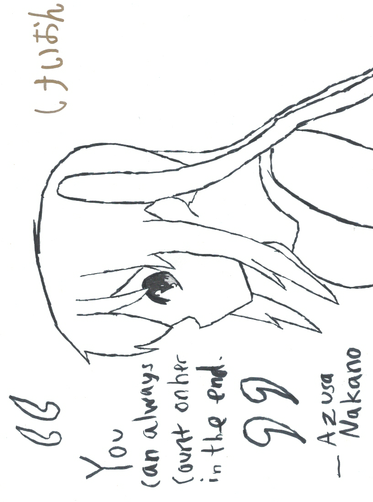
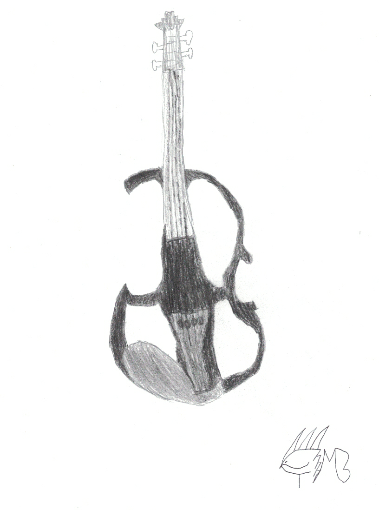

Welcome to the Other art tab! This tab has different types of art that don't belong in the other categories
What you see here are examples of SVGs. SVGs are vector graphics that you can make.
This is a drawing of Azusa Nakano from the anime K-on. She was the first human that I ever drew.
A picture of my dream electric violin
